第一章 计算机网络体系结构相关概述
计算机网络已经由一种通信基础设施发展成为一种重要的信息服务基础设施
1 网络、互联（连）网 和因特网
- 网路（Network） 由若干结点（Node）和连接这些节点的链路（Link）组成。
- 多个网络还可以通过路由器互连起来，这样旧构成了一个覆盖范围更大的网络，即互联网（或互连网）。因此，互联网是网络的网络 （Network of Networks）。
- 因特网（Internet）是世界上最大的互连网络
Internet和Internet的区别 internet（互连网或互联网）是一个通用名词，它泛指由多个计算机网络互连而成的网络，在这些网络之间的通信协议是任意的。 Internet（因特网）则是一个专用名词，它指当前全球最大的、开放的、由众多网络相互连接而成的特定计算机网络，它采用TCP/IP协议作为通信规则，其前身是美国的ARPANET。
2 因特网发展的三个阶段
- 1969 从单个网络ARPANET向互联网发展
- 1985 逐步建成三级结构的因特网
- 1993逐步形成了多层次ISP结构的因特网
ISP(internet service provider)译为互联网服务提供商，类似中国电信，中国移动，中国联通就是国内有名的ISP。ISP可以从互联网管理机构申请到很多IP地址，然后一些机构和个人从某个ISP获取IP地址的使用权，并可通过该ISP连接到互联网。 三层ISP结构分为主干ISP，地区ISP，本地ISP。本地ISP给用户提供最直接的服务，本地ISP可以连接到地区ISP，也可以连接到主干ISP。从原理上讲。只要每一个本地ISP都安装了路由器连接到某个地区ISP，而每一个地区ISP也有路由器连接到主干ISP，那么在这些相互连接的ISP的共同作用下，就可以完成互联网中的所有的分组转发任务。
3 因特网的标准化工作
- 因特网的标准化工作对因特网的发展起到非常重要的作用。
- 因特网在制定其标准上的一个很大的特点是面向公众。
- 因特网所有的RFC（Request For Comments）技术文档都可以从因特网上下载；
- 任何人可以随时使用电子邮件对某个文档发表意见或建议。
- 因特网协会ISOC是一个国际性组织，它负责对因特网进行全面管理，以及在世界范围内促进其发展和作用。
- 因特网体系结构委员会IAB，它负责对因特网有关协议的开发；
- 因特网工程部IETF，负责研究中短期工程问题，主要针对协议的开发和标准化；
- 因特网研究部IRTF，从事理论方面的研究和开发一些需要长期考虑的问题。
- 指定因特网的正式标准要经过以下4个阶段
- 因特网草案（这个阶段还不是RFC文档）
- 建议标准（这个阶段开始就成为RFC文档）
- 草案标准
- 因特网标准
4 因特网的组成
- 边缘部分 由所有连接在因特网上的主机组成。这部分是用户直接使用的，用来进行通信（传送数据，音频或者视频）和资源共享。
- 核心部分 由大量网络和连接这些网路的路由器组成。这部分是为边缘部分提供服务的（提供连通性和交换）。
1 电路交换
- 电话交换机接通电话线的方式称为电路交换
- 从通信资源的分配角度来看，交换就是按照某种方式动态地分配传输线路的资源
- 电路交换的三个步骤：
- 建立连接（分配通信资源）
- 通话（一直占用通信资源）
- 释放连接（归还通信资源）
2 分组交换
也称包交换，是将用户传送的数据划分成一定的长度，每个部分叫做一个分组，通过传输分组的方式传输信息的一种技术
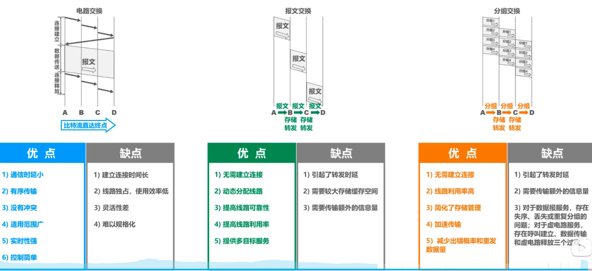
- 计算机网络的精确定义并未统一
- 计算机网络的最简单的定义是：一些互相连接的、自治的计算机的集合
- 互连：指计算机之间可以通过有线或无线的方式进行数据通信
- 自治：指独立的计算机，它有自己的硬件和软件，可以单独运行使用
- 集合：指至少需要两台计算机
- 计算机网络较好定义：计算机网络主要是由一些通用的、可编程的硬件互连而成的，而这些硬件并非专门用来实现某一特定目的（例如，传送数据或视频信号）。这些可编程的硬件能够用来传送多种不同类型的数据，并能支持广泛的和日益增长的应用
- 计算机网络所连接的硬件，并不限于一般的计算机，而是包括了智能手机等智能硬件
- 计算机网络并非专门用来传送数据，而是能够支持很多种应用（包括今后可能出现的应用）
计算机网络的分类
- 按照交换技术分类
- 电路交换网络
- 报文交换网络
- 分组交换网络
- 按照使用者分类
- 公用网
- 专用网
- 按照传输介质分类
- 有线网络
- 无线网络
- 按照覆盖范围分类
- 广域网WAN
- 城域网MAN
- 局域网LAN
- 个域网PAN
- 按照拓扑结构分类
- 总线型网路
- 星型网络
- 环型网络
- 网状型网络
首先先了解一下比特的概念 比特是计算机中数据量的单位，也是信息论中信息量的单位，一个比特就是二级制数字中的一个1或0 （8 bit = 1 Byte）
-
速率 连接在计算机网络上的主机，在数字信道上，传送比特的速率，也称为比特率或数据率
-
带宽（两种含义） 信号所包含的各种不同频率成分，所占据的频率范围，单位是：Hz（在模拟信号系统的意义） 带宽是用来表示网络的通信线路所能传送数据的能力，因此网路带宽表示在单位时间内从网络中某一点到另一点所能通过的”最高数据率“，单位：b/s（在计算机网络中的意义）
带宽的这两种表述之间有着密切的联系，一条通信线路的“频带宽度”越宽，其所传输数据的“最高数据率”也越高
-
吞吐量 吞吐量表示单位时间内通过某个网络（或信道、接口）的数据量 另外，吞吐量受网络的带宽或额定速率的限制
- 时延
- 发送时延
- 传播时延
- 处理时延
- 时延带宽积 = 传播时延 * 带宽 （可以把链路想象成一个管道，长度为传播时延，横截面积为带宽，则时延带宽积就是该管道的体积）
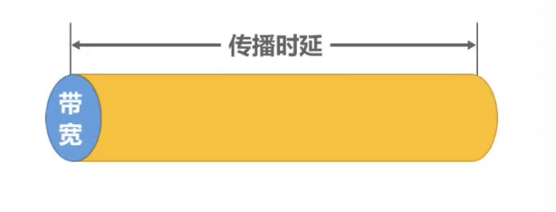
- 若发送端连续发送数据，则在所发送的第一个比特即将到达终点时，发送端就已经发送了时延带宽积个比特
-
链路的时延带宽积又称为以比特为单位的链路长度
-
往返时间RTT（Round-Trip Time）
- 利用率
- 信道利用率：用来表示某信道有百分之几的时间是被利用的（有数据通过）
- 网络利用率：全网络的信道利用率的加权平均
- 丢包率
- 也称分组丢失率，指在一定的时间范围内，传输过程中丢失的分组数量与总分组数量的比率
- 另外分组丢失主要由两种情况：
- 分组在传输过程中 出现误码，被结点丢弃
- 分组到达一台队列已满的分组交换机被丢弃；在通信量较大时就可能造成网络拥堵
- 丢包率反应了网络的拥塞情况
1 常见的计算机网络体系结构
OSI 体系结构：（法律上的国际标准） 应用层 表示层 会话层 运输层 网络层 数据链路层 物理层
TCP/IP体系结构：（事实上的国际标准） 应用层 运输层 网际层 网络接口层
计算机网络体系结构分层的必要性
分层主要是为了将计算机之间的协调这个庞大的工程问题，转化为若干个较小的局部易于研究的问题
其中：
- 应用层：解决通过应用进程的交互来实现特定网络应用的问题
- 运输层：解决进程之间基于网络的通信问题
- 网络层：解决分组在多个网络上传输（路由）的问题
- 数据链路层：解决分组在一个网络（或一段链路）上传输的问题
- 物理层：解决使用何种信号来传输比特的问题
计算机网络体系结构中的专业术语
- 实体：任何可发送或接收信息的硬件或软件进程
- 对等实体：接收双方相同层次中的实体
- 协议：控制两个对等实体进行逻辑通信的规则的集合
- 协议的三要素
- 语法：定义所交换信息的格式
- 语义：定义收发双发所要完成的操作
- 同步：定义收发双方的时许关系
- 服务：在协议的控制下，两个对等实体间的逻辑通信使得本层能够向上提供一层服务
- 要实现本层协议，还需要使用下面一层所提供的服务
- 协议是“水平”的，服务是“垂直”的
- 实体看得见相邻下层所提供的服务，但并不知道实现该服务的具体协议，也就是说，下面的协议对上面的实体是透明的
- 服务访问点：在同一系统中相邻两层的实体交互信息的逻辑接口，用于区分不同的服务类型
- 服务原语：上层使用下层所提供的服务必须通过与下层交换一些命令，这些命令称为服务原语
- 协议数据单元PDU：对等层次之间的传送数据包称为该层的协议数据单元
- 服务数据单元SDU：同一系统内，层与层之间交互的数据包称为服务数据单元
第二章 物理层
- 物理层考虑的是怎样才能在连接各种计算机的传输媒体上，传输数据比特流
- 物理层为链路层屏蔽了各种传输媒体的差异，使数据链路层只需要考虑如何完成本层的协议和服务，而不必考虑网络具体的传输媒体是什么
- 物理层协议的主要任务
- 机械特性：指明接口所用接线器的形状和尺寸，引脚数目和排列、固定和锁定装置
- 电气特性：指明在接口电缆的各条线上出现的电压的范围
- 功能特性：指明某条线上出现的某一电平的电压表示何种意义
- 过程特性：指明对于不同功能的各种可能事件的出现顺序
物理层下面的传输媒体
- 引导型传输媒体
- 同轴电缆
- 双绞线
- 光纤
- 电力线
- 非引导型传输媒体
- 无线电波
- 微波
- 红外线
- 可见光
物理层主要由三大类传输方式：
第一类主要是 串行传输和并行传输
第二类主要是同步传输和异步传输 同步传输采用收发双方时钟同步的方法 · 外同步：在收发双方之间添加一条单独的时钟信号线 · 内同步：发送端将时钟同步信号编码到发送数据中一起传输 异步传输 · 字节之间异步（字节之间的时间间隔不固定） · 字节中的每个比特仍然要同步（各比特的持续时间是相同的）
第三类主要是单向通信（单工）、双向交替通信（半双工）、双向同时通信（全双工）
编码和调制
首先要知道一点，为了传输数据，都需要将数据转变为信号，这样才能转发出去 把数据转换为模拟信号的过程称为调制，把数据转换为数字信号的过程称为编码
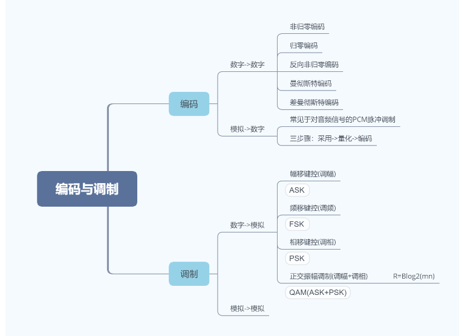
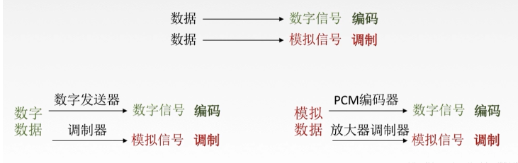
信道极限容量
信道的极限容量是指信道的最高码元传输速率
因为信号在传输过程当中会不可避免的失真，造成信号衰弱，所以就由此引出奈氏准则和香农公式，它们的目的都是为了尽可能的提高码元传输速率，尽可能地降低信号失真
-
奈氏准则（在假定理想条件下，为了避免码间串扰，码元传输速率是有上限的） 理想低通信道的最高码元传输速率 = 2W Baud = 2W 码元/秒 其中W表示信道带宽（单位为Hz），Baud表示波特（单位码元/秒）
- 码元传输速率又称为波特率、调制速率、波形速率或符号速率。它与比特率有一定关系：1. 当1个码元只携带1比特的信息量时，则波特率（码元/秒）与比特率（比特/秒）在数值上是相等的；2. 当1个码元携带n比特的信息时，则波特率转换为比特率，数值上要乘以n
- 要提高信息传输速率（比特率），就必须设法使每一个码元能携带更多个比特的信息量，这就要采用多元制
-
实际的信道所能传输的最高码元速率，要明显低于奈氏准则给出的这个上限数值
- 香浓公式（带宽受限且有高斯白噪声干扰的信道的极限信息传输速率） c = W * log2(1 + S/N) c:信道的极限信息传输速率（b/s） W:信道带宽（Hz） S:信道内所传信号的平均功率 N:信道内的高斯噪声功率 S/N:信道比
- 信道带宽或信道中信噪比越大，信息的极限传输速率越高
- 在实际信道上能达到的信息传输速率要比该公式的极限传输速率低很多。因为还要受到很多其他因素的干扰
第三章 数据链路层
- 链路（Link）就是从一个结点到相邻结点的一段物理线路，而中间没有任何其他的交换节点
- 数据链路（Data Link）是指把实现通信协议的硬件和软件加到链路上，就构成了数据链路
- 数据链路层以帧为单位传输和处理数据
使用点对点信道的数据链路层要解决的三个问题： 封装成帧、差错检测、可靠传输
封装成帧
- 封装成帧是指数据链路层给上层交付的协议数据单元添加帧头和帧尾使之成为帧
- 帧头和帧尾中包含有重要的控制信息
- 帧头和帧尾的作用之一就是帧定界
- 透明传输是指数据链路层对上层交付的传输数据没有任何限制，就好像数据链路层不存在一样
- 面向字节的物理链路使用字节填充的方法实现透明传输
- 面向比特的物理链路使用比特填充的方法实现透明传输
- 为了提高帧的传输速率，应当使帧的数据部分的长度尽可能大一些
- 考虑到差错控制等多种原因，每一种数据链路层协议都规定了帧的数据部分的长度上限，即最大传送单元MTU（Maximum Transfer Unit）
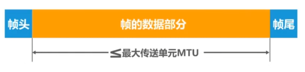
差错检测
- 实际的通信链路都是不理想的，比特在传输过程当中可能会产生差错，1可能变为0，0可能变为1，这就是比特差错
- 在一段时间内，传输错误的比特所占传输比特总数的比率成为误码率BER（Bit Error Rate）
- 于是有两种常用的检测方式：奇偶校验和循环冗余校验CRC（Cyclic Redundancy Check）
奇偶校验
- 在待发送的数据后面添加1位奇偶校验位，使整个数据（包括所添加的校验位在内）中“1“的个数为奇数（奇校验）或偶数（偶校验）
- 如果有奇数个位发生误码，则奇偶性发生变化，可以检查出误码
- 如果有偶数个位发生误码，则奇偶性不发生变化，不能检查出误码（漏检）
循环冗余校验
- 收发双方约定好一个生成多项式G（x）
- 发送方基于待发送的数据和生成多项式计算出 差错检验码（冗余码），将其添加到待传输的数据后面一起传输
- 接收方通过生成多项式来计算收到的数据是否产生了误码
注意
- 检错码只能检测出帧在传输过程中出现了差错，但不能定位错误，因此无法纠正错误
- 要想纠正传输中的差错，可以使用冗余信息更多的纠错码进行前向纠错。但纠错码的开销比较大，在计算机网络中较少使用
- 循环冗余校验CRC有很好的检错能力（漏检率非常低），虽然计算比较复杂，但非常易于用硬件实现，因此被广泛应用于数据链路层
可靠传输
- 使用差错检测技术（例如循环冗余CRC），接收方的数据链路层就可检测出帧在传输过程中是否产生了误码（比特错误）
- 数据链路层向上提供的服务类型：
- 不可靠传输服务：仅仅丢弃有误码的帧，其他什么也不做
- 可靠传输服务：想办法实现发送端发送什么，接收端就接收什么
- 无线链路易受干扰，误码率比较高，因此要求数据链路层必须向上层提供可靠传输服务
停止-等待协议SW（Stop-and-Wait）
- 接收端检测到数据分组有误码时，将其丢弃并等待发送方的超时重传，但对于误码率较高的点对点链路，为使发送方尽早重传，也可给发送放发送NAK分组
- 为了让接收方能够判断所收到的数据分组是否是重复的，需要给数据分组编号。由于停止-等待协议的停止等待特性，因此只需要1个比特编号就够了，即编号0和1
- 为了让发送方能够判断所收到的ACK分组是否是重复的，需要给ACK分组编号，所用比特数量与数据分组编号所用比特数量一样。数据链路层一般不会出现ACK分组迟到的情况，因此在数据链路层实现停止-等待协议可以不用给ACK分组编号
回退N帧协议GBN（Go-Back-N）
回退N帧协议在流水线传输的基础上利用发送窗口来限制发送方连续发送数据分组的数量，是一种连续ARQ协议。
在协议的工作过程总发送窗口和接收窗口不断向前滑动，因此这类协议又叫做滑动窗口协议
由于回退N帧协议的特性，当通信线路质量不好的时候，其信道利用率并不比停止-等待协议高
- 接收方地接收窗口尺寸 Wr 的取值范围是 Wr = 1，因此接收方只能按序接收数据分组
- 接收方只接收序号落在接收窗口内且无误码的数据分组，并且将接收窗口向前滑动一个位置，与此同时给发送方发回相应的确认分组。为了减少开销，接收方不一定每收到一个按序到达且无误码的数据分组就给发送方发回一个确认分组
- 而是连续在收到好几个按序到达且无误码的数据分组后（由具体实现决定），才针对最后一个数据分组发送确认分组，这称为累积确认
- 或者可以在字节有数据分组要发送时才对之前按序接收且无误码的数据分组进行捎带确认
- 接收方收到未按序到达的数据分组，除丢弃外，还要对最近按序接收的数据分组进行确认
选择重传协议SR（Selective Request）
- 接收窗口尺寸Wr的取值范围是 1< Wr <= Wt
- 接收方可接收未按序到达但没有误码并且序号落在接收窗口内的数据分组
- 为了使发送方仅重传出现差错的分组，接收方不能再采用累积确认，而需要对每个正确接收到的数据分组再逐一确认
- 接收方只有在按序接收数据分组之后，接收窗口才能向前相应滑动
点对点协议PPP
- PPP协议为在点对点链路传输各种协议数据报提供了一个标准方法，主要由以下三个部分构成：
- 对各种协议数据报的封装方法（封装成帧）
- 链路控制协议LCP ，用于建立、配置以及测试数据链路的连接
- 一套网络控制协议NCPs ，其中的每一个协议支持不同的网络层协议
- PPP帧的透明传输
- 面向字节的异步链路使用字节填充法（插入转义字符）
- 面向比特的同步链路使用的比特填充（零比特填充）
- PPP协议的工作状态
媒体接入控制的基本概念
共享信道要着重考虑的一个问题就是如何协调多个发送和接收站点对一个共享传输媒体的占用，即媒体接入控制MAC（Medium Access Control）
媒体介入控制分为：
- 静态划分信道
- 频分多址
- 时分多址
- 码分多址
- 动态接入控制
- 受控接入
- 随机接入
媒体接入控制——动态接入——随机接入——载波监听多址接入\碰撞检测CSMA/CD协议
- CSMA/CD协议地工作原理：
- 多点接入MA：多个主机连接在一条总线上，竞争使用总线
- 载波监听CS：发送帧前线检测总线，若总线空闲96比特时间，则立即发送；若总线忙，则持续检测总线直到总线空闲96比特时间后再重新发送
- 碰撞检测到CD：边发送边检测碰撞，若检测到碰撞，则立即停止发送，退避一段随机时间后再重新发送
- 使用CSMA/CD协议地以太网地争用期（碰撞窗口）
- 发送帧地主机最多经过以太网端到端往返传播时延2ε这么长时间，就可检测到本次传输是否发生了碰撞，2ε称为争用期
- 经过争用期这段时间还没有检测到碰撞，才能肯定这次发送不会发生碰撞
- 以太网规定2ε的取值为512比特时间（即发送512比特所耗费的时间）
- 使用CSMA/CD协议的以太网的最小帧长和最大帧长
- 最小帧长 = 争用期 * 信道带宽（数据发送速率）
- 以太网的最小帧长确保了主机可在帧发送完成之前就检测到该帧的发送过程中是否遭遇了碰撞，如果检测到碰撞，则停止发送帧的剩余部分，退避一段随机时间后，重新发送该帧
- 为了防止主机长时间占用总线，以太网的帧也不能太长
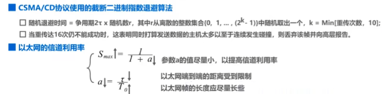
CSMA/CD协议曾经用于各种总线结构以太网和双绞线以太网的早期版本中，现在的以太网基于交换机和全双工连接，不会有碰撞，因此没必要使用CSMA/CD协议
媒体接入控制——动态接入——随机接入——载波监听多址接入\碰撞避免CSMA/CA协议
- 802.11 无线局域网在MAC层使用CSMA/CA协议，以尽量减少碰撞发送的概率。不能使用CSMA/CD协议的原因是在无线局域网种无法实现碰撞检测。在使用CSMA/CA协议的同时，还使用停止-等待协议来实现可靠传输
- 为了尽可能地避免各种可能地碰撞，CSMA/CA协议采用了一种不同于CSMA/CD协议地退避算法。当要发送帧地站点检测到信道从忙态转为空闲时，都要执行退避算法
- 802.11 标准规定，所有站在完成发送后，必须再等待一段帧间间隔时间才能发送下一帧。帧间间隔地长短取决于该站要发送地帧地优先级
- 在802.11 无线局域网地MAC帧首部种有一个持续字段，用来填入在本帧结束后还要占用信道多少时间，其他站点通过该字段可实现虚拟载波监听
- 802.11 标准允许要发送数据地站点对信道进行预约，即在发送数据帧之前先发送，请求发送RTS帧，在收到响应允许发送CTS帧后，就可发送数据帧
MAC地址、IP地址以及ARP协议
MAC地址是以太网地MAC子层所使用地地址—-数据链路层 IP协议是属于TCP/IP体系结构网际层所使用地地址—网际层 ARP协议属于TCP/IP体系结构地网际层，其作用是已知设备所分配到地IP地址，使用ARP协议可以通过IP地址获取到设备的MAC地址—-网际层
MAC地址
- 当多个主机连接在同一个广播信道上，要想实现两个主机之间的通信，则每个主机都必须有一个唯一的标识，即一个数据链路层地址
- 在每个主机发送的帧中必须携带标识发送主机和接收主机的地址。由于这类地址是用于媒体接入控制MAC（Media Access Control），因此这类地址被称为MAC地址
- MAC地址一般被固化在网卡（网络适配器）的电可擦可编程只读存储器EEPROM中，因此MAC地址也被称为硬件地址
- MAC地址有时候也被称为物理地址（注意：这并不意味着MAC地址属于网络体系结构中的物理层）
- 一般情况下，用户主机会包含两个网络适配器：有线局域网适配器（有线网卡）和无线局域网适配器（无线网卡）。每个网络适配器都有一个全球唯一的MAC地址，而交换机和路由器往往拥有更多的网络接口，所以会拥有更多的MAC地址。因此，严格来说，MAC地址是对网络上各种接口的唯一标识，而不是对网络上各设备的唯一标识
IP地址（本身属于网络层，此处只介绍作用）
- IP地址是因特网（Internet）上的主机和路由器所使用的地址，用于标识两部分信息：
- 网络编号：标识因特网上数以百万计的网络
- 主机编号：标识同一网络上不同主机（或路由器）
- MAC地址不具备区分不同网络的功能
- 如果只是一个单独的网络，不需要接入因特网，可以只使用MAC地址（不是一般用户的应用方式）
- 如果主机所在的网络要接入因特网，即IP地址和MAC地址都要使用
- 数据包转发过程中IP地址与MAC地址的变化情况：
- 源IP地址和目的IP地址保持不变
- 源MAC地址和目的MAC地址逐个链路（或逐个网络）改变
地址解析协议ARP
- 源主机在自己的ARP高速缓存表中查找目的主机的IP地址所对应的MAC地址，若找到了，则可以封装MAC帧进行发送；若找不到，则发送ARP请求（封装在单播MAC帧中），ARP响应中包含有目的IP和MAC地址
- 源主机收到ARP响应后，将目的主机的IP地址与MAC地址记录到自己的ARP高速缓存表中，然后就可以封装之前想发送的MAC帧并发送给目的主机
- ARP的作用范围：逐段链路或逐个网络使用
- 除ARP请求和响应外，ARP还有其他类型的报文
- ARP没有安全验证机制，存在ARP欺骗（攻击）问题
集线器与交换机的区别
- 集线器HUB
- 早期以太网的互连设备
- 工作在OSI体系结构的物理层
- 对接收到的信号进行放大、转发
- 使用集线器作为互连设备的以太网仍然属于共享总线式以太网。集线器互连起来的所有主机共享总线带宽，属于同一个碰撞域和广播域
- 交换机SWITCH
- 目前以太网中使用最广泛的互连设备
- 工作在OSI体系结构的数据链路层（也包括物理层）
- 根据MAC地址对帧进行转发
- 使用交换机作为互连设备的以太网，称为交换式以太网。交换机可以根据MAC地址过滤帧，即隔离碰撞域
- 交换机的每个接口是一个独立的碰撞域
- 交换机隔离碰撞域但不隔离广播域（VLAN除外）
以太网交换机自学习和转发帧的流程
- 以太网交换机工作在数据链路层（包括物理层）
- 以太网交换机收到帧后，在帧交换表中查找帧的目的MAC地址所对应的接口号，然后通过该接口转发帧
- 以太网交换机是一种即用即插设备，刚上电启动时其内部的帧交换表是空的。随着网络中各主机间的通信，以太网交换机通过自学习算法自动逐渐简历起帧交换表
- 以太网交换机自学习和转发帧的流程：
- 收到帧后进行登记，登记的内容为帧的源MAC地址及进入交换机的接口号；
- 根据帧的目的MAC地址和交换机的帧交换表对帧进行转发，有以下三种情况：
- 明确转发：交换机知道应当从哪个（或哪些）接口转发该帧（单播、多播、广播）
- 盲目转发：交换机不知道应当从哪个端口转发帧，只能将其通过除进入交换机的接口外的其他所有接口转发（也称为泛洪）
- 明确丢弃：交换机知道不应该转发该帧，将其丢弃
- 帧交换表中的每条记录都有自己的有效时间，到期删除，原因如下：
- 交换机的接口该接了另一台主机
- 主机更换了网卡
以太网交换机的生成树协议STP
- 以太网交换机使用生成树协议STP（Spanning Tree Protocol），可以在增加冗余链路来提高网络可靠性的同时又避免网络环路带来的各种问题
- 不论交换机之间采用怎样的物理连接，交换机都能够自动计算并构建一个逻辑上没有环路的网络，其逻辑拓扑结构必须是树形的（无逻辑环路）
- 最终生成的树形逻辑拓扑要确保连通整个网络
- 当首次连接交换机或网络物理拓扑发生变化时（有可能是人为改变或故障），交换机都将进行生成树的重新计算
虚拟局域网VLAN概述
巨大的广播域会带来很多的弊端：广播风暴，难以管理和维护。因此人们想要分隔广播域，可以使用路由器隔离广播域，但其成本较高，因此虚拟局域网的技术诞生了
虚拟局域网VLAN（Virtual Local Area Network）是一种将物理上分散的网络设备虚拟地组合成逻辑上的局域网的技术。它可以将不同的网络设备，如交换机、路由器、计算机等，按照其功能、位置、业务等因素分组，形成一个或多个虚拟局域网，实现不同VLAN之间的隔离和通信。这种技术可以提高网络的可靠性、安全性和灵活性，同时也可以减少网络的管理和维护成本
虚拟局域网技术主要通过在交换机上进行VLAN配置来实现。交换机可以根据不同的标识（如VLAN ID）将其管理的端口分成不同的VLAN组，从而实现不同VLAN之间的隔离和通信。具体实现过程如下：
-
配置VLAN：管理员可以在交换机上创建和配置不同的VLAN，为每个VLAN分配一个唯一的标识（VLAN ID）。
-
配置端口：管理员可以将交换机的端口分配给不同的VLAN，在端口上设置VLAN ID，将端口与对应的VLAN关联起来。
-
数据交换：当数据从一个VLAN中的设备发送到另一个VLAN中的设备时，数据包必须经过交换机来实现跨VLAN通信。交换机根据VLAN ID将数据包转发到对应的VLAN中的目的设备。
-
VLAN间路由：如果需要在不同的VLAN之间进行通信，需要通过路由器来实现。路由器可以连接不同的VLAN，并在它们之间进行数据转发。
通过这种方式，虚拟局域网技术可以实现不同VLAN之间的隔离和通信，提高网络的可靠性、安全性和灵活性。
第四章 网络层
网络层的主要任务是实现网络互连，进而实现数据包在各个网络之间的传输 网络层解决的主要问题：
- 网络层向运输层提供怎样的服务（可靠、不可靠传输）
- 网络层寻址问题
- 路由选择问题
网络层提供的两种服务
| 对比方面 | 虚电路服务 | 数据报服务 |
|---|---|---|
| 思路 | 可靠通信应当由网络来保证 | 可靠通信由用户主机来保证 |
| 连接的建立 | 必须建立网络层连接 | 不需要建立网络层连接 |
| 终点地址 | 仅在连接建立阶段使用，每个分组使用短的虚电路号 | 每个分组都有终点的完整地址 |
| 分组的转发 | 属于同一条虚电路的分组均按照同一路由进行转发 | 每个分组可走不同的路由 |
| 当结点出故障时 | 所有通过出故障的结点的虚电路均不能工作 | 出故障的结点可能会丢失分组，一些路由可能会发生变化 |
| 分组的顺序 | 总是按发送顺序到达终点 | 到达终点时不一定按发送顺序 |
| 服务质量保证 | 可以将通信资源提前分配给每一个虚电路，容易实现 | 很难实现 |
IPv4地址概述
IPv4地址就是，给因特网上的每一台主机（或路由器）的每一个接口分配一个，在全世界范围内是唯一的32比特的标识符 IPv4地址的编址方法经历了三个阶段：分类编址—划分子网—无分类编址 IPv4地址采用点分十进制表示方法
分类编址的IPv4地址
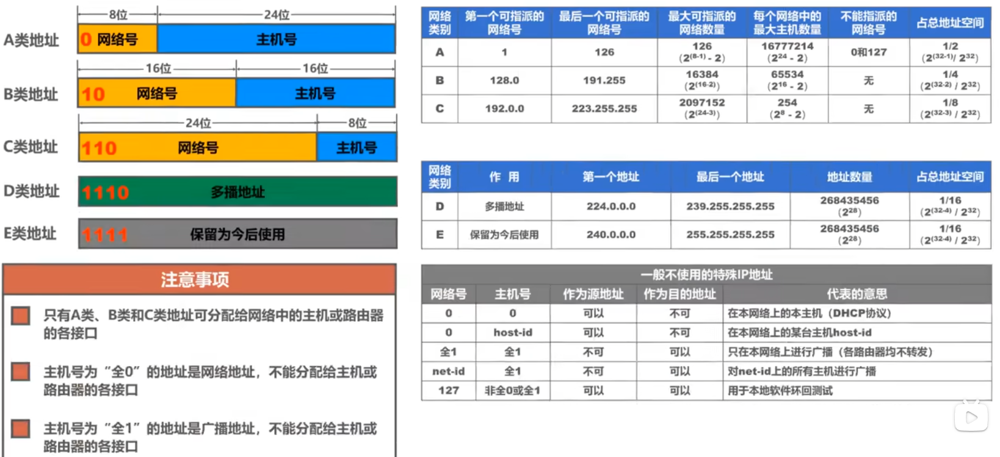
划分子网的IPv4地址
- 为新增网络申请新的网络号会带来很多弊端：
- 需要等待时间和花费更多的费用
- 会增加其他路由器中路由表记录的数量
- 浪费原有网络号中剩余的大量IP地址
- 可以从主机号借用一部分比特作为子网号
- 32比特的子网掩码可以表明分类IP地址的主机号部分被借用了几个比特作为子网号
- 子网掩码使用连续的比特1来对应网络号和子网号
- 子网掩码使用连续的比特0来对应主机号
- 将划分子网的IPv4地址与其相应的子网掩码进行逻辑与运算就可得到IPv4地址所在子网的网络地址
- 给定一个分类的IP地址和其相应的子网掩码，就可知道子网划分的细节：
- 划分出的子网数量
- 每个子网可分配的IP地址数量
- 每个子网的网络地址和广播地址
- 每个子网可分配的最小和最大地址
- 默认的子网掩码是指再未划分子网的情况下使用的子网掩码
- A类：255.0.0.0
- B类：255.255.0.0
- C类：255.255.255.0
无分类编址的IPv4地址
- 划分子网在一定程度上缓解了因特网在发展中遇到的困难，但是数量巨大的C类网因为其地址空间太小，没有得到充分的使用，而因特网的IP地址仍在加速消耗，整个IPv4地址空间面临全部消耗的威胁
- 因此有了无分类域间路由选择CIDR（Classless Inter-Domain Routing）
- CIDR取消了传统的A类、B类、C类地址，以及划分子网的概念
- CIDR可以更加有效的分配IPv4的地址空间
- CIDR使用斜线记法，即在IPv4地址后面加上” / “，在斜线后面写上网络前缀所占的比特数量
- CIDR实际上是将网络前缀都相同的连续的IP地址组成一个“CIDR地址块”
- 路由聚合（也称超网）的方法是找共同前缀
- 网络前缀越长，地址块越小，路由越具体
- 若路由器查表转发分组时发现有多条路由可选，则选择网络前缀最长的那条，这称为最长前缀匹配，因为这样的路由更具体
IP数据报的发送和转发过程
主机发送IP数据报
判断目的主机是否与自己在同一个网络：
- 若在同一个网络，则属于直接交付
- 若不在同一个网络，则属于间接交付，传输给主机所在的网络的默认网关（路由器），由默认网关帮忙转发；
路由器转发IP数据报
- 检查IP数据报首部是否出错：
- 若出错，则直接丢弃该IP数据报并通告源主机
- 若没有出错，则进行转发
- 根据IP数据报的目的地址在路由表中查找匹配的条目：
- 若找到匹配的条目，则转发给条目中指示的下一跳
- 若找不到，则丢弃该IP数据报并通告源主机
路由选择协议概述
它分为静态和动态路由选择两类
- 静态路由选择
- 由人工培植的网络路由、默认路由、特定主机路由、黑洞路由等都属于静态路由
- 这种人工配置方式简单、开销小，但不能及时适应网络状态（流量、拓扑等）的变化
- 一般只在小规模网络中采用
- 动态路由选择
- 路由选择器通过路由选择自动获取路由信息 当一个数据包需要从源设备传输到目的设备时，路由器需要根据路由表中存储的路由信息选择最佳的路径将数据包传输到目的地。路由选择器通过交换路由信息，更新路由表，选择最优路径，从而实现网络中的数据传输。
路由选择器通过交换路由信息的方式，可以自动获取网络中的路由信息，包括网络拓扑结构、路由器之间的连接状态、网络中的子网等信息。它可以将这些信息传递给其他路由器，更新路由表，并根据最新的路由信息选择最佳的路径进行数据转发。
- 比较复杂，开销大，能较好的适应网路状态的变化
- 适用于大规模网路
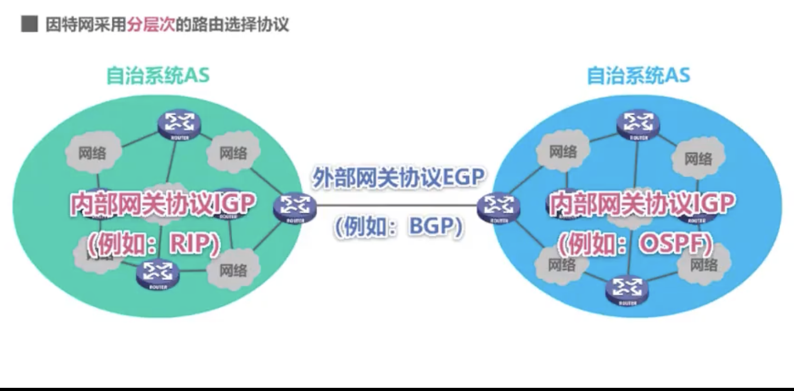
路由信息协议RIP的基本工作原理
- 路由信息协议RIP（Routing Information Protocol）是内部网关协议IGP中最先得到广泛使用的协议之一
- RIP要求自治系统AS内的每一个路由器都要维护从它自己到AS内其他每一个网络的距离记录。这是一组距离，称为“距离向量”
- RIP使用“跳数”来衡量到达目的网络的距离
- 路由器到直连网络的距离定义为1
- 路由器到非直连网络的距离定义为所经过的路由器数目+1
- 允许一条路径最多只能包含15个路由器，“距离”等于16时，表示不可达。因此，RIP只适用于小型互联网
- RIP认为好的路由就是“距离短”的路由，也就是所通过路由器数量最少的路由
- 当到达同一目的网络的网络有多条“距离相等”的路由时，可以进行等价负载均衡
- RIP包含以下三个要点：
- 和谁交换信息 仅和相邻路由器交换信息
- 交换什么信息 自己的路由表
- 何时交换信息 周期性交换
- RIP的基本工作过程：
- 路由器刚开始工作时，只知道自己到直连网络的距离是1
- 每个路由器仅和相邻路由器周期性交换并更新路由信息
- 若干次交换和更新后，每个路由器都知道到达本AS内个网络的最短距离和下一跳地址，称为收敛
- RIP的路由条目的更新规则*：
- 发现了新网络，添加
- 到达目的网络，相同下一跳，最新消息，更新
- 到达目的网络，不同下一跳，新路由优势，更新
- 到达目的网络，不同下一跳，新路由劣势，不更新
- 到达目的网络，不同下一跳，等价负载均衡
- RIP存在“坏消息传播的慢”的问题
- 坏消息传播的慢，又称为路由环路或距离无穷计数问题，这是距离向量算法的一个固有问题 距离向量算法（Distance Vector Algorithm）是一种用于计算路由器之间最短路径的算法。它是一种分布式算法，每个路由器只知道自己与相邻路由器之间的距离和路径信息，通过交换路由表信息，逐步更新整个网络中的路由表，最终得到每个路由器到其他路由器的最短路径。 距离向量算法的基本思想是，每个路由器维护一个距离向量表，记录到达网络中每个目的地的距离和路径。路由器通过将自己的距离向量表发送给相邻路由器，接收相邻路由器的距离向量表，并根据收到的信息更新自己的距离向量表。路由器之间周期性地交换距离向量表，直到整个网络的路由表收敛到最优解。 距离向量算法的优点是实现简单、计算速度快，适用于小型网络。但是它也有一些缺点，比如容易出现路由环路问题、收敛速度慢、路由器需要周期性地更新路由表等。因此，在大型网络中，通常采用链路状态路由算法（Link State Algorithm）来计算最短路径，它可以更准确地计算网络中的路径，并且具有更好的可扩展性和稳定性。
开放最短路径优先OSPF的基本工作原理
- 开放最短路径优先OSPF（Open Shortest Path First）是为克服RIP的缺点发明出来的
- “开放”表明OSPF协议不是受某一家厂商控制，而是公开发表 的
- “最短路径优先”是因为使用了迪杰斯特拉提出的最短路径算法SPF
- OSPF是基于链路状态的，采用SPF算法计算路由，从根本上解决了不会产生路由环路，并且它不限制网络规模，更新效率高，收敛速度快
- 链路状态是指本路由器都和哪些路由器相邻，以及相应链路的代价
- “代价”用来表示费用、距离、时延、带宽等等，这些都是由网络管理人员来决定
- 使用OSPF的每个路由器都会产生链路状态通告LSA（Link State Advertisement），LSA包含以下内容：
- 直连网络的链路状态信息
- 邻居路由器的链路状态信息
- LSA被封装在链路状态更新分组中，采用洪泛法发送
- OSPF有物种分组类型：
- 问候分组
- 数据库描述分组
- 链路状态请求分组
- 链路状态更新分组
- OSPF在多点接入网络中路由器邻居关系的建立
- 为了使OSPF能够用于规模很大的网络，OSPF把一个自治系统再划分为若干个更小的范围，叫做区域
- 划分区域的好处就是把利用洪泛法交换链路状态信息的范围局限于每一个区域而不是整个自治系统，这就减少了整个网络上的通信量
边界网关协议BGP的基本工作原理
- 外部网关协议EGP
- 在不同的自治系统内，度量路由的“代价”（距离、带宽、费用等）可能不同。因此，对于自治系统之间的路由选择，使用“代价”作为度量来寻找最佳路由是不行的
- BGP只是力求寻找一条能够到达目的网络且比较好的路由（不能兜圈子），而并非要寻找一条最佳路由
- 再配置BGP时，每个自治系统的管理员要选择至少一个路由器作为该自治系统的“BGP发言人”
- 不同自治系统的BGP发言人要交换路由信息，必须建立TCP连接，端口号是179
- 在此TCP连接上交换BGP报文以建立BGP会话
- 利用BGP会话交换路由信息
- 使用TCP连接交换路由信息的两个BGP发言人，彼此称为对方的临站或对等站
- BGP发言人除了运行BGP外，还必须运行自己所在自治系统所使用的内部网关协议IGP
- BGP发言人交换网络可达性的信息（要到达某个网络索要经过的一系列自治系统）
- 当BGP发言人互相交换了网络可达性的信息后，各BGP发言人就根据所采用的策略从收到的路由信息中找出到达各自治系统的较好的路由。也就是构造出树形结构，不存在回路的自治系统连通图
- BGP适用于多级结构的因特网
- BGP-4有以下四种报文：
- OPEN报文：用来与相邻的另一个BGP发言人建立关系，是通信初始化
- UPDATE报文：用来通告某一路由的信息，以及列出要撤销的多条路由
- KEEPALIVE报文：用来周期性地证实临站地连通性
- NOTIFICATION报文：用来发送检测到的差错
网际控制报文协议ICMP
- 为了更有效地转发IP数据报和提高交付成功地机会，在网际层使用了ICMP（Internet Control Message Protocol）
- 主机或路由器使用ICMP来发送差错报告报文和询问报文
- ICMP报文被封装在IP数据报中发送
- ICMP差错报告报文共有以下五种：
- 终点不可达
- 源点抑制
- 时间超过
- 参数问题
- 改变路由（重定向）
- 以下情况不应该发送ICMP差错报告报文：
- 对第一个分片的数据报片的所有后续数据报片都不发送ICMP差错报告报文
- 对具有多播地址的数据报都不发送
- 对具有特殊地址（127.0.0.0或0.0.0.0）的数据报不发送
- 常用的ICMP询问报文有两种：
- 回送请求和回答
- 时间戳请求和回答
- ICMP应用：
- 分组网间探测ping
- 跟踪路由traceroute
虚拟专用网VPN与网络地址转换NAT
虚拟专用网VPN（Virtual Private Network）
- 利用公用的因特网作为本机构各专用网之间的通信载体，这样的专用网又称为虚拟专用网
- 同一机构内不同部门的内部网络所构成的虚拟专用网VPN又称为内联网VPN
- VPN要保证传输数据的安全性，会将原始的内部数据报进行加密，然后再将其封装称为在因特网上发送到的外部数据报
- 有时一个机构的VPN需要有些外部机构（合作伙伴）参加进来，这样的就称为外联网VPN
- 在外地工作的员工需要访问公司内部的专用网络，通过VPN软件就可以访问，这种称为远程接入VPN
网络地址转换NAT（Network Address Translation）
- 由于IP地址的紧缺，一个机构能够申请到的IP地址数量往往小于本机构所拥有的主机数量。因此，虚拟专用网中的各主机所分配的地址应该是本机构可自由分配的专用地址，而不是需要申请的、在因特网上使用的公有地址
- NAT能使大量，使用内部专用红地址的专用网络用户共享少量外部全球地址，来访问因特网上的主机和资源
- 由于绝大多数的网络应用都是使用运输层协议TCP或UDP来传送数据，因此可以利用运输层的端口号和IP地址一起进行转换。这样，网络地址与端口号转换NAPT（Network Address and Port Translation）
- 由于NAT对外网屏蔽了内网主机的网络地址，能为内网的主机提供一定的安全保证
第五章 运输层
- 计算机网络体系结构中的物理层、数据链路层、以及网络层它们共同解决了主机将通过异构网络互联起来所面临的问题，实现了主机到主机的通信
- 但实际上在计算机网络中进行通信的真正实体是位于通信两端主机中的进程
- 运输层的任务是给运行在不同主机上的应用进程提供直接的通信服务，运输层协议又称为端到端协议
- 运输层向高层用户屏蔽了下面网络核心的细节（网络拓扑、路由选择协议等），它使应用进程看见的就好像是在两个运输层实体之间有一条端到端的逻辑通信信道
- 运输层提供两种运输协议，即面向连接的TCP和无连接的UDP
运输层中端口号、复用和分用的概念
- 运输层端口号是指在计算机网络中，用于标识应用程序或服务的端口号。每个端口号都与一个特定的应用程序或服务相关联。如HTTP服务使用的端口号是80，FTP服务使用的端口号是21
- 复用（Multiplexing）是指在发送端将多个应用程序的数据流合并成一个数据流进行传输，而在接收端将这个数据流分解成多个应用程序的数据流。这样可以节省网络资源，提高网络的利用率。在TCP/IP协议中，复用是通过端口号来实现的。发送端将数据包发送到目的地址的相应端口号，接收端根据端口号将数据包分发给对应的应用程序。
- 分用（Demultiplexing）是指在接收端将一个数据流分解成多个应用程序的数据流。接收端根据端口号将接收到的数据包分发给对应的应用程序。在TCP/IP协议中，分用是通过端口号来实现的。接收端根据端口号将接收到的数据包分发给对应的应用程序。
UDP和TCP的对比
用户数据报协议UDP（User DATa gram Protocol）
- 无连接
- 支持一对一，一对多，多对一和多对多交互通信
- 对应用层交付的报文直接打包
- 尽最大努力交付，也就是不可靠；不使用流量控制和拥塞控制
- 首部开销小，仅8字节
传输控制协议TCP（Transmission Control Protocol）
- 面向连接
- 每一条TCP连接只能有两个端点，只能是一对一通信
- 可靠传输，使用流量控制和拥塞控制
- 首部最小20字节，最大60字节
TCP的流量控制
- 一般来说，我们是希望数据传输的更快一些
- 但如果发送方把数据发送得过快，接收方就可能来不及，这就会造成数据的丢失
- 所谓流量控制（flow control）就是让发送方的发送速率不要太快，要让接收方来得及接收
- 利用滑动窗口机制，可以很方便地在TCP连接数实现对放松方地流量控制
- TCP接收方利用自己的接收窗口大小来限制发送方发送窗口的大小
- TCP发送方收到接收方的零窗口通知后，应启动持续计时器。持续计时器超时后，向接收方发送零窗口探测报文
TCP的拥塞控制
TCP拥塞控制是一种网络流量控制机制，旨在避免网络拥塞并保证数据传输的可靠性。TCP拥塞控制包括四个主要算法：慢开始、拥塞避免、快重传和快恢复
- 慢开始（Slow Start）：慢开始算法的主要目的是在数据传输开始时缓慢增加发送方的拥塞窗口（cwnd），以避免网络拥塞。发送方在开始传输数据时，将拥塞窗口设置为一个较小的值，然后每收到一个确认消息就将拥塞窗口增加一倍，直到达到一个阈值（通常是拥塞窗口的一半）。这个阈值称为慢开始阈值（ssthresh）
- 拥塞避免（Congestion Avoidance）：拥塞避免算法的主要目的是在网络拥塞时减少发送方的拥塞窗口，以避免网络拥塞的进一步恶化。发送方在达到慢开始阈值后，将拥塞窗口增加一个拥塞窗口的倒数（即每个确认消息增加1/cwnd），这样就可以缓慢增加发送方的拥塞窗口，避免网络拥塞
- 快重传（Fast Retransmit）：快重传算法的主要目的是在网络丢包时快速重传丢失的数据包，以减少数据传输的延迟。如果发送方连续收到三个重复的确认消息，就会认为有一个数据包丢失了，并立即重传该数据包，而不必等待超时
- 快恢复（Fast Recovery）：快恢复算法的主要目的是在网络丢包时快速恢复发送方的拥塞窗口，以减少数据传输的延迟。如果发送方连续收到三个重复的确认消息，就会认为有一个数据包丢失了，并将拥塞窗口设置为慢开始阈值的一半，然后进入快恢复状态。在快恢复状态下，发送方每收到一个确认消息就将拥塞窗口增加1，直到达到慢开始阈值
TCP可靠传输实现
- TCP基于以字节为单位的滑动窗口来实现可靠传输
- 发送方在未收到接收方的确认时，可将发送窗口内还未发送的数据全部发送出去
- 接收方只接收序号落入发送窗口内的数据
- 虽然发送方的发送窗口是根据接收方的接收窗口设置的，但在同一时刻，发送方的发送窗口并不总是和接收方的接收窗口一样大
- 网络传送窗口值需要经历一定的时间滞后，并且这个时间不确定
- 发送方还可能根据网络当时的拥塞情况适当减小自己的发送窗口尺寸
- 对于不按序到达数据应如何处理，TCP无明确规定
- 如果接收方把不按序到达的数据一律丢弃，那么接收窗口的管理系那个会比较简单，但这样对网络资源利用不好，因为发送方会重复传送较多的数据
- TCP通常对不按序到达的数据是先临时存在接收窗口上，等到字节流中所缺少的字节收到后，再按序交付上层的应用进程
- TCP要求接收方必须要有累积确认和捎带确认机制，这样可以减小传输开销。接收方可以再合适的时候发送确认，也可以再字节有数据要发送时把确认信息顺便捎带上
- 接收方不应过分推迟发送确认，否则会导致发送方不必要的超时重传
- 捎带确认实际上并不经常发生，因为大多数应用程序很少同时再两个方向上发送数据
- TCP的通信是全双工通信通信中的每一方都在发送和接收报文段。因此，每一方都有自己的发送窗口和接收窗口
TCP的运输连接管理——TCP的连接建立
- TCP是面向连接的协议，它基于运输连接来传送TCP报文段
- TCP运输连接的建立和释放是每一次面向连接的通信中必不可少的过程
- TCP运输连接有三个阶段：
- 建立TCP连接
- 数据传送
- 释放TCP连接
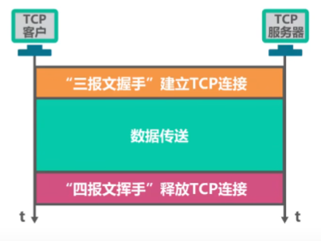
三次握手是TCP协议中建立可靠连接的过程，它由客户端和服务器之间的三个步骤组成。这三个步骤分别是：
- 第一次握手：客户端向服务器发送一个SYN（同步）数据包，其中包含一个随机生成的序列号（Seq）
- 第二次握手：服务器收到客户端的SYN数据包后，向客户端回复一个SYN+ACK（同步、确认）数据包，其中包含确认号（ack）和一个随机生成的序列号（Seq）
- 第三次握手：客户端收到服务器的SYN+ACK数据包后，向服务器回复一个ACK（确认）数据包，其中包含确认号（ack），此时TCP连接已经建立 三次握手的目的是确保客户端和服务器之间的TCP连接是可靠的，防止重复连接和数据包丢失等问题。通过这个过程，客户端和服务器之间可以互相确认彼此的身份，并建立起一个可靠的连接来传输数据
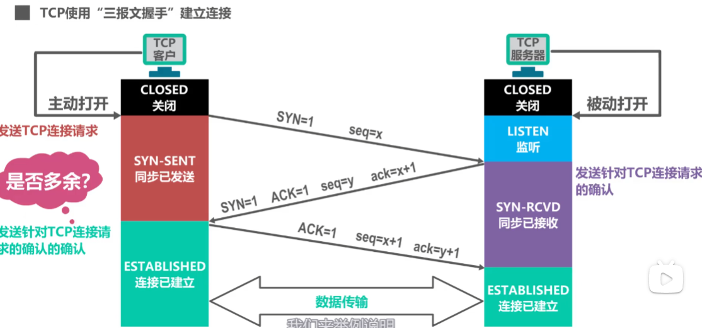
TCP的运输连接管理——TCP的连接释放
四次挥手是TCP连接的断开过程，由客户端和服务器共同完成。四次挥手的过程如下：
- 客户端发送一个FIN报文给服务器，表示客户端已经没有数据要发送了
- 服务器接收到FIN报文后，发送一个ACK报文给客户端，表示服务器已经接收到了客户端的FIN报文
- 服务器发送一个FIN报文给客户端，表示服务器已经没有数据要发送了
- 客户端接收到服务器的FIN报文后，发送一个ACK报文给服务器，表示客户端已经接收到了服务器的FIN报文 这样四次挥手过程完成后，TCP连接就被正常地关闭了。需要注意的是，四次挥手过程中，每个报文都需要对方发送确认，因此需要四次挥手才能完成连接的断开
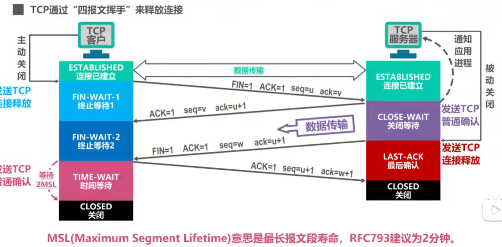
第六章 应用层
- 应用层是计算机网络体系结构的最顶层，是设计和建立计算机网络的最终目的
客户/服务器方式（C/S方式）和对等方式（P2P方式）
客户/服务器（C/S方式）
- 客户和服务器是指通信中所涉及的两个应用进程
- 客户/服务器方式所描述的是进程之间服务和被服务的关系
- 客户是服务请求方，服务器是服务提供方
- 服务器总是处于运行状态，并等待客户的服务请求。服务器具有固定的端口号（HTTP服务器的默认端口号是80）
- 基于C/S方式的应用服务器通常是服务集中型的，即应用服务集中在，网络中比客户计算机少得多的服务器计算机上
- 由于一台服务器计算机要为多个客户机提供服务，在C/S应用中，常会出现服务器计算机跟不上众多客户机请求的情况
- 在C/S应用中，常用计算机集群（或服务器场）构建一个强大的虚拟服务器
对等（Peer-to-Peer，P2P）方式
- 在P2P方式中，没有固定的服务请求者和服务提供者，分布在网络边缘各端系统中的应用进程是对等的，被称为对等方。对等方相互之间直接通信，每个对等方既是服务的请求者，又是服务的提供者
- 基于P2P的应用是服务分散型的，因为服务不是集中在少数几个服务器计算机中，而是分散在大量对等计算机中，这些计算机并不为服务提供商所有，而是为个人控制的桌面计算机和笔记本电脑
- P2P方式的最突出特性之一就是它的可扩展性，因为系统每增加一个对等方，不仅增加的是服务的请求者，同时也增加了服务的提供者，系统性能不会因规模的增大而降低
- P2P方式具有成本上的优势，因为不需要旁大的服务器设施和服务器带宽
动态主机配置协议DHCP
动态主机配置协议（Dynamic Host Configuration Protocol，简称 DHCP）是一种网络协议，用于自动分配 IP 地址、子网掩码、默认网关等网络参数，以及 DNS 服务器等信息给网络中的设备。DHCP 服务器可以自动为新加入网络的设备分配可用的 IP 地址，从而避免了手动配置 IP 地址的繁琐过程。DHCP 还可以对已有的设备进行 IP 地址的更新、续约和释放等操作，从而实现 IP 地址的动态管理。DHCP 协议通常运行在局域网中的 DHCP 服务器上，而客户端设备则通过 DHCP 协议来获取网络配置信息。
域名系统DNS（Domain Name System）
- 域名系统DNS是因特网使用的命名系统，用来把便于人们记忆的具有特定含义的主机名，转换为便于机器处理的IP地址
- 因特网采用层次树状结构的域名系统
- 顶级域名TLD（Top Level Domain）分为以下三类：
- 国家顶级域名nTLD
- 通用顶级域名给TLD
- 反向域arpa
- 域名和IP地址的映射关系必须保存在域名服务器中，供所有其他应用查询。但是不可能将所有信息都存储在一台域名服务器中，DNS使用分布在各地的域名服务器来实现域名到IP地址的转换
- 域名服务器可以划分为以下四种类型：
- 根域名服务器
- 顶级域名服务器
- 权限域名服务器
- 本地域名服务器
- 域名解析的过程有两种查询方式：
- 递归查询
- 迭代查询
- 为了提高DNS的查询效率，并减轻根域名服务器的负荷和减少因特网上的DNS查询报文数量，在域名服务器和主机中广泛地使用了高速缓存
- DNS报文使用运输层地UDP协议进行封装，运输层端口号是53
文件传输协议FTP
- 将某台计算机中地文件通过网络传送到可能相距很远地另一台计算机中，是一项基本的网络应用，即文件传送
- 文件传输协议FTP（File Transfer Protocol）是因特网上使用的最广泛地文件传输协议
- FTP提供交互式地访问，允许客户指明文件地类型与格式，并允许文件具有存取权限
- FTP屏蔽了各计算机系统地细节，因而适合于在异构网络中任意计算机之间传输文件
- FTP客户和服务器之间要建立以下两个并行的TCP连接：
- 控制连接，在整个会话期间一直保持打开，用于传送FTP相关控制命令
- 数据连接，用于文件传输，在每次文件传输时才建立，传输结束就关闭
- 默认情况下，FTP使用TCP21 端口进行控制连接，TCP20 端口进行数据连接。是否使用TCP20 端口建立数据连接与传输模式有关，主动方式使用TCP20端口，被动方式由服务器和客户端自行协商决定
电子邮件
- 电子邮件系统采用客户/服务器方式，三个主要组成构件：用户代理、邮件服务器、所需要的协议
- 用户代理是用户与电子邮件系统的接口，又称为电子邮件客户端软件
- 邮件服务器是电子邮件系统的基础设施。因特网上所有的ISP都有邮件服务器，其功能是发送和接收邮件，同时还要负责维护用户的邮箱
- 协议包括邮件发送协议（SMTP）和邮件读取协议（POP3）
- 最常用的邮件发送协议是简单邮件传送协议SMTP
- 基于TCP连接，端口号为25
- 只能传送ASCII码文本
- 用于用户代理向邮件服务器发送邮件以及邮件服务器之间的邮件发送
- 为解决SMTP传送非ASCII码文本的问题，提出了多用途因特网邮件扩展MIME
- 常用的邮件读取协议有以下两个：
- 邮局协议POP3：非常简单、功能有限的邮件读取协议。用户只能以下载并删除方式或下载并保留方式从邮件服务器下载邮件到用户方计算机。不允许用户在邮件服务器上管理自己的邮件、
- 因特网邮件访问协议IMAP：功能比POP3强大的邮件读取协议。用户在自己的计算机上就可以操控邮件服务器中的邮件，IMAP是一个联机协议
- POP3和IMAP4都采用基于TCP连接的客户/服务器方式，POP3使用端口110，IMAP使用端口143
- 基于万维网的电子邮件
- 通过浏览器登录
- 这种工作模式在用户浏览器与邮件服务器网站之间使用HTTP协议，而邮件服务器之间使用SMTP协议
万维网WWW
- 万维网WWW（World Wide Web）是一个大规模的、联机式的信息储藏所，是运行在因特网上的一个分布式应用
- 浏览器最重要的部分是渲染引擎，也就是浏览器内核，负责对网页内容进行解析和显示
- 万维网使用统一资源定位符URL来指明因特网上任何种类 资源的位置
- 万维网文档
- 超文本标记语言HTML：使用多种“标签”来描述网页的结构和内容（网页扩展名为.html）
- 层叠样式表CSS：美化网页样式（文件扩展名为.css）
- 脚本语言JavaScript：控制网页的行为（文件扩展名为.js）
- 超文本传输协议HTTP（Hyper Text Transfer Protocol）定义了浏览器（即万维网客户进程）怎样向万维网服务器请求万维网文档，以及万维网服务器怎样把万维网文档传送给浏览器
- HTTP/1.0采用非持续连接方式，每次浏览器要请求一个文件都要与服务器建立TCP连接（80端口），当收到响应后就立即关闭连接
- HTTP/1.1采用持续连接方式，万维网服务器在发送响应后仍然保持这条连接，使同一个客户（浏览器）和该服务器可以继续在这条连接上传送后续的HTTP请求报文和响应报文。为了进一步提高效率，还可以采用流水线方式，即浏览器在收到HTTP的响应保温之前就能够连续发送多个请求和报文
- HTTP有两类报文，请求报文和响应报文
- Cookie提供了一种机制使得万维网服务器能够“记住”用户，无需用户主动提供用户标识信息，也就是说，Cookie是一种对于无状态的HTTP进行状态化的技术
- 在万维网中，可以使用缓存机制来提高万维网的效率，万维网缓存又称为Web缓存，可位于客户机，也可位于中间系统上，位于中间系统上的Web缓存又称为代理服务器
第七章 网络安全
- 安全威胁
- 被动攻击
- 主动攻击
- 中断
- 篡改
- 伪造
- 恶意程序： 1）计算机病毒 2） 计算机蠕虫 3） 特洛伊木马 4） 逻辑炸弹 5） 后门入侵 6） 流氓软件
- 拒绝服务
- 安全服务
- 保密性：确保网络中传输地信息只有其发送方和接收方才能懂得其含义，而信息地截获者则看不懂所截获地数据。保密性是计算机网络中最基本地安全服务，也是对付被动攻击所必须具备地功能
- 报文完整性：确保网络中传输地信息不被攻击篡改或者伪造，它在应对主动攻击时是必不可少地
- 实体鉴别：通信两端地实体能够相互验证对方地真实身份，确保不会与冒充者进行通信。
- 不可否认性：来防止发送方或接收方否认发送或接收过某种信息
- 访问控制：可以限制和控制不同实体对信息源或其他系统资源进行访问的能力，必须在鉴别实体
- 可用性：是确保授权用户能够正常访问系统信息和资源。很多攻击都会导致系统可用性的损失，拒绝服务Dose攻击就是可用性最直接的威胁
DoS攻击是指攻击者通过向目标系统发送大量的请求或数据流量，使其超过正常处理能力，从而导致系统崩溃或无法正常工作。DoS攻击通常使用单个计算机或网络连接来发起攻击
DDoS攻击是一种更复杂的攻击形式，它涉及多个计算机或网络连接，同时向目标系统发送大量的请求或数据流量。攻击者通常使用僵尸网络（也称为“僵尸军团”）来发起攻击，这是一组已被攻击者控制的计算机，可以在攻击者的指令下同时向目标系统发送请求或数据流量
密码学相关概念
- 将发送的数据变换成对任何不知道如何做逆变换的人都不可理解的形式，从而保证数据的机密性，这种变换称为加密
- 加密前的数据被称为明文
- 加密后的数据被称为密文
- 通过某种逆变换将密文重新变换为明文，这种逆变换称为解密
- 加密和解密过程可以使用密钥作为参数
- 密钥必须保密，但加密和解密的过程可以公开
- 只有知道密钥的人才能解密密文，否则即使知道加密或解密算法也无法解密密文
- 另外，加密密钥和解密密钥可以相同，也可以不同（即使不同，这两个密钥也必然有某种相关性），这取决于采用的是对称密钥密码体制还是公开密钥密码体制
对称密钥密码体制
- 对称密钥密码体制是指加密密钥与解密密钥相同的密码体制
- 数据加密标准DES，是对称密钥密码体制的典型代表
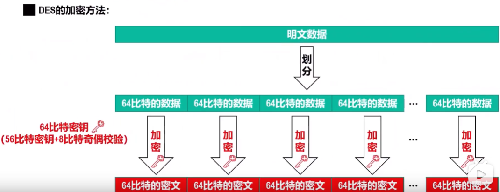
公钥密码体制
- 公钥密码体制使用不同的加密密钥和解密密钥
- 加密密钥是向公众公开的，称为公钥pk
- 解密密钥是需要保密的，称为私钥SK
- 加密算法D和解密算法D都是公开的
常见的网络攻击及防范
- 网络扫描
- 网络扫描是获取攻击目标信息的一种重要技术
- 攻击目标信息包括目的主机的IP地址、操作系统、运行的程序、存在的漏洞等
- 在进行网络攻击之前，对攻击目标的信息掌握的越全面和具体,就能合理有效地制定攻击策略和方法，进而提高网络攻击地成功率
- 网络扫描只要有四种类型：
- 主机发现：指搜索要攻击的主机，实际要确定该目标主机的IP地址，主要利用ICMP网际控制报文协议
- 端口扫描：获取目标主机所有端口的工作状态，进而确定目标主机开放了哪些网络服务
- 操作系统检测：是指通过特定的技术手段，获取用户设备上运行的操作系统类型及版本号等信息的过程
- 漏洞扫描：指通过自动化工具或手动方式，对计算机系统、网络设备、应用程序等进行扫描，以发现其中存在的漏洞
- 网络监听
- 网络中传输的数据大部分都是明文形式，如果攻击者对网络进行监听并截获了包含有大量明文信息的一系列分组，则可从这些分组中直接分析出账号、密码等敏感信息
- 常见的网络监听类型有：
- 分组嗅探器：（Packet Sniffer）是一种网络安全工具，可以截获网络通信过程中的数据包，并对其进行分析和解码。它可以用于网络流量监控、协议分析、网络故障排查、网络安全检测等方面。分组嗅探器通常以软件形式存在，可以在计算机上安装和运行，也可以作为网络设备的一部分来使用。但需要注意的是，未经授权使用分组嗅探器可能会涉及到违法行为，需要遵守相关法律法规
- 交换机毒化攻击：一种利用网络交换机漏洞或者误配置，通过发送特定的网络数据包，使得交换机中的MAC地址表被篡改，从而导致网络中的通信数据被劫持、篡改、丢失等问题的攻击行为。攻击者可以通过伪造MAC地址，将自己的MAC地址伪装成网络中其他设备的MAC地址，从而实现对网络流量的监控和劫持
- ARP欺骗：（ARP spoofing）是一种网络攻击技术，攻击者通过伪造ARP协议中的欺骗信息，将自己的MAC地址伪装成目标主机的MAC地址，从而使得攻击者可以截取目标主机与其他主机之间的通信，或者将流量重定向到攻击者所控制的主机上。ARP欺骗攻击常被用于网络钓鱼、中间人攻击等恶意行为中。为防止ARP欺骗攻击，可以采取一些防范措施，比如使用静态ARP表、ARP检测工具、网络流量监控等手段。